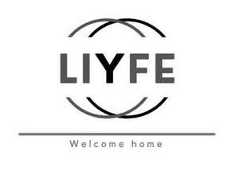

Trade Mark Journal No.2025/048 28 November 2025
UK00004272618 2 October 2025 (7,9,11,21)

- Class 7
- Clothes drying (spin) machines; clothes pressing machines; clothes washing machines; dishwashers; dishwashing machines; domestic blenders (electric); electric blenders; electric household cleaning appliances; electric juice extractors; electric knives; electric mixers for mixing food; food processors (electric); fruit presses, electric, for household purposes; ironing machines; machines for use in the kitchen (electric); vacuum cleaners; washer-dryers; washing and/or drying machines; washing machines (laundry); waste disposal apparatus.
- Class 9
- Adaptors for use with electric plugs; extension leads (electric); power distributors (electrical); surge protectors; charging cables; charging adaptors; power adaptors; power banks; charging devices; portable power chargers; electrical cables; electrical adaptors; USB adaptors; USB cables; USB chargers; data cables; cable adaptors; plug adaptors; cables, electric; charging cables for smartphones; chargers for mobile phones; chargers for smartphones; chargers; chargers for batteries; computer cables; electric power adaptors; electric extension cables; electric extension leads; electrical power extension cords; electrical power supplies; electrical plugs and sockets; battery chargers; battery adaptors.
- Class 11
- Air circulation apparatus; air conditioners; air cooling apparatus; air dehumidifiers; air fryers; air heaters; air humidifiers; air purification apparatus; apparatus for cooking; apparatus for freezing; apparatus for heating; apparatus for lighting; apparatus for purifying water; apparatus for the refrigeration of wines; apparatus for ventilating; bread baking machines; bread toasters; clothes drying apparatus (heat drying); coffee machines, electric; combined stoves; cookers; cooking appliances; cooking ovens; cooking ranges; cooking stoves; cooking utensils, electric; cooling installations for refrigerating; deep freezers; drinking fountains; electric apparatus for cooking foods; electric blankets, other than for medical use; electric lights; extractor hoods for kitchens; fan heaters; fans for ventilating; flashlights (torches); freezers; frying machines for food; grills (cooking appliances); hair driers; hand torches (flashlights); heaters; heating apparatus; light bulbs; lights; microwave ovens (cooking apparatus); mobile air conditioning apparatus; mobile heating apparatus; mobile ventilating apparatus; ovens, other than for laboratory use; pressure cookers, electric; refrigerators; rice cookers; roasters; room fans; room heaters; sandwich makers (toasters); space heaters; spot lights; spot lights for household illumination; stoves (cooking apparatus); tea kettles (electric); tea making machines; toasters; water coolers; wine cellars, electric; wood stoves.
- Class 21
- Aluminium cookware; articles for use in cooking namely cooking pots, cooking pans, cooking utensils, grills and griddles and basting spoons; bakeware; beverageware; containers for household or kitchen use; cooking utensils, non-electric; cookware; crockery for kitchen use; deep fryers, non- electric; domestic non-electric kitchen apparatus; frying pans; glassware; grills (cooking utensils); hand-operated apparatus for household use namely table cutlery, can openers, meat thermometers, pasta makers, pepper and salt mills, garlic presses, vegetable mashers, vegetable peeler, scissors and sheers, nutcrackers, pestles and mortars, vegetable shredders, graters, pizza cutters, cheese slicers, zesters, fruit presses, blenders, egg separators, sieves, sifters, strainers and whisks; household utensils; kettles, non-electric; kitchen tools (utensils, not electric); kitchen utensils; ovenware; pots; tableware (other than knives, forks and spoons).
GSM Retail Australia Pty Ltd
Representative: HGF Limited